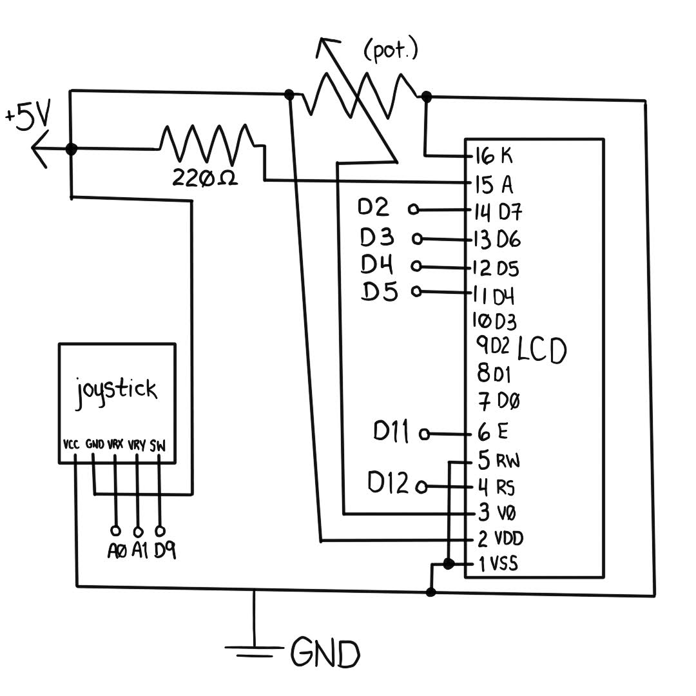
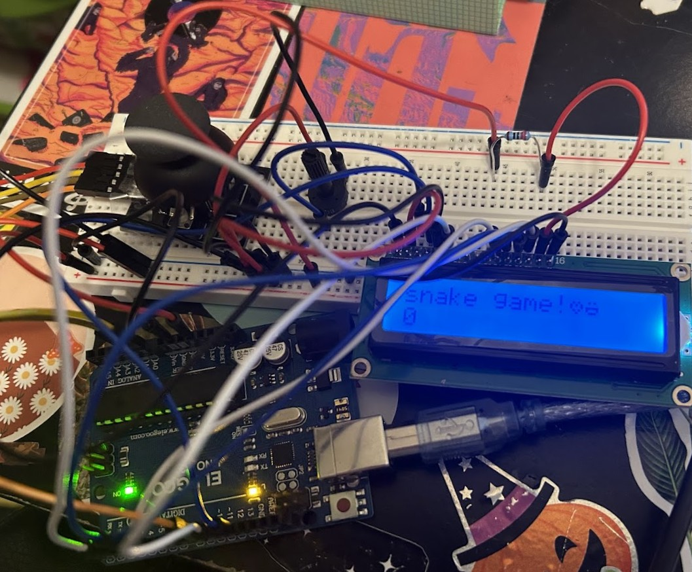
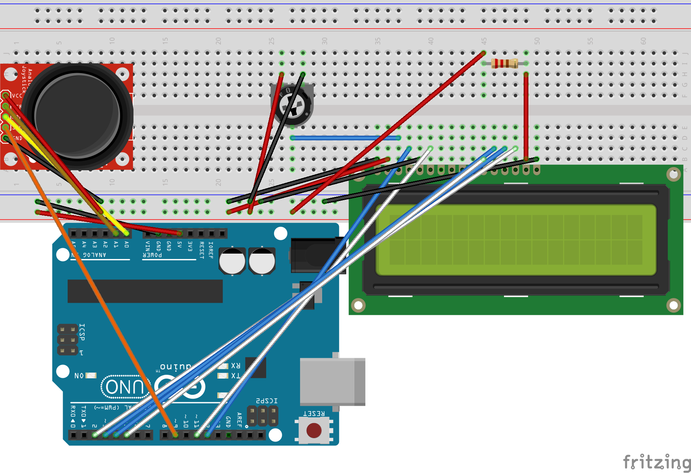

Here is where all the documentation for Assignment 6: Talking to the web!
The prompt is to create a webpage with p5.js that interacts with the Arduino using the following:



// Code for joystick pulls from https://arduinogetstarted.com/tutorials/arduino-joystick
// Code for averaging pulls from https://brodycyphers.wordpress.com/2021/11/09/simple-game-with-p5-js/
// Code for LCD setup from https://docs.arduino.cc/learn/electronics/lcd-displays/
// LCD custom characters from https://deepbluembedded.com/lcd-custom-character-arduino/
// Include library for LCD screen
#include
// initialize library by associating LCD interface pins with respective arduino pin number
const int rs = 12, en = 11, d4 = 5, d5 = 4, d6 = 3, d7 = 2;
LiquidCrystal lcd(rs, en, d4, d5, d6, d7);
// define LCD custom characters
uint8_t SmileyFaceChar[] = {0x00, 0x00, 0x0a, 0x00, 0x1f, 0x11, 0x0e, 0x00};
uint8_t HeartChar[] = {0x00, 0x00, 0x0a, 0x15, 0x11, 0x0a, 0x04, 0x00};
// define constant variables (unchanging) for Arduino pins connected to joystick inputs
const int VRx = A0;
const int VRy = A1;
const int SW = 9;
// Set number of readings to average (unchanging)
const int numReadings = 3;
// Variables to enable averaging
int Xreadings[numReadings]; // array of readings from the analog input
int XreadIndex = 0; // the index of the current reading
int Xtotal = 0; // the running total
int Xaverage = 0; // the average
int Yreadings[numReadings]; // array of readings from the analog input
int YreadIndex = 0; // the index of the current reading
int Ytotal = 0; // the running total
int Yaverage = 0; // the average
// Variable to recieve and store score
int score;
void setup() {
// begin Serial communication
Serial.begin(9600);
// set PinModes for joystick inputs
pinMode(VRx, INPUT);
pinMode(VRy, INPUT);
pinMode(SW, INPUT_PULLUP);
// set up array for average readings to clear jitter
for (int thisReading = 0; thisReading < numReadings; thisReading++) {
Xreadings[thisReading] = 0;
}
for (int thisReading = 0; thisReading < numReadings; thisReading++) {
Yreadings[thisReading] = 0;
}
// set up the LCD's number of columns and rows:
lcd.begin(16, 2);
// send the custom characters to LCD's CGRAM
lcd.createChar(0, HeartChar);
lcd.createChar(1, SmileyFaceChar);
// clear LCD
lcd.clear();
// prints a message to the LCD.
lcd.print("snake game!");
lcd.write(byte(0));
lcd.write(byte(1));
}
void loop() {
// read and store the state of the joystick switch
int switchState = digitalRead(SW);
// use averaging function, first for x-axis
Xtotal -= Xreadings[XreadIndex]; // subtract the last reading
Xreadings[XreadIndex] = analogRead(VRx); // read x value from joystick and add to x reading array
Xtotal += Xreadings[XreadIndex]; // add reading to total
XreadIndex++; // go to next reading in array
// wrap to beginning of array when at end
if (XreadIndex >= numReadings) {
XreadIndex = 0;
}
// calculate x average
Xaverage = Xtotal / numReadings;
// continue to use averaging function from setup, now for y-axis
Ytotal -= Yreadings[YreadIndex]; // subtract the last reading
Yreadings[YreadIndex] = analogRead(VRy); // read y value from joystick and add to y reading array
Ytotal += Yreadings[YreadIndex]; // add reading to total
YreadIndex++; // go to next reading in array
// wrap to beginning of array when at end
if (YreadIndex >= numReadings) {
YreadIndex = 0;
}
// calculate y average
Yaverage = Ytotal / numReadings;
// delay in between reads for stability
delay(100);
// send joystick values
Serial.print(Xaverage);
Serial.print(",");
Serial.print(Yaverage);
Serial.print(",");
Serial.println(switchState);
// if serial data arrives
if (Serial.available()) {
// wait for the entire message to arrive
delay(100);
// read available data
while (Serial.available() > 0) {
// display data on the LCD
score = int(Serial.read());
lcd.setCursor(0, 1);
lcd.print(score);
}
}
}
// Snake game built using example code from https://p5js.org/examples/games-snake/ by Prashant Gupta and revised by Caleb Foss.
// The snake moves along a grid, one space at a time
// The grid is smaller than the canvas, and its dimensions
// are stored in these variables
let gridWidth = 30;
let gridHeight = 30;
let gameStarted = false;
// How many segments snake starts with
let startingSegments = 10;
// Starting coordinates for first segment
let xStart = 0;
let yStart = 15;
// Starting direction of motion
let startDirection = 'right';
// Current direction of motion
let direction = startDirection;
// The snake is divided into small segments,
// stored as vectors in this array
let segments = [];
let score = 0;
let highScore;
// The fruit's position is stored as a vector
// in this variable
let fruit;
// Global variables for serial communication
const BAUD_RATE = 9600; // this should match the baud rate in your Arduino sketch
let port, connectBtn; // these are used for setting up the serial connection
// Variables for joystick input
let xVal; // joystick X value from Arduino
let prevXVal; // previous joystick X value from Arduino
let yVal; // joystick Y value from Arduino
let prevYVal; // previous joystick Y value from Arduino
let switchVal; // joystick switch value from Arduino
let prevSwitchVal; // previous joystick switch value from Arduino
function setup() {
setupSerial(); // Run serial setup function
// Create a canvas that is square, fitting within the browser window
if (windowWidth < windowHeight) {
createCanvas(windowWidth, windowWidth);
} else {
createCanvas(windowHeight, windowHeight);
}
textAlign(CENTER, CENTER);
textSize(2);
// Check for saved high score in local browser storage
// If no score has been stored, this will be undefined
highScore = getItem('high score');
describe(
'A reproduction of the arcade game Snake, in which a snake, represented by a green line on a black background, is controlled by a joystick connected to Arduino. Users move the snake toward a fruit, represented by a red dot, but the snake must not hit the sides of the window or itself.'
);
}
function draw() {
background(0);
// Set scale so that the game grid fills canvas
scale(width / gridWidth, height / gridHeight);
if (gameStarted === false || !checkPort()) { // added !checkPort() to show start screen if port not open
showStartScreen();
} else if (gameStarted === true && checkPort()) { // added checkPort() to ensure port is open before running game
// Shift over so that snake and fruit are still on screen
// when their coordinates are 0
translate(0.5, 0.5);
showFruit();
showSegments();
// Snake game example used a set frame rate of 10
// For this version, I instead control speed here to avoid limiting the joystick input reading rate
// while still limiting the speed of the snake
if (frameCount % 10 == 0) { // if the current frame is divisible by 10
updateSegments(); // update the snake
}
checkForCollision();
checkForFruit();
// My additions: to read joystick, control snake, and send score back to Arduino
receiveData();
joystickControl();
sendData();
}
}
// function to draw GUI, used for debugging
function drawGUI() {
/**
* Draw a simple GUI that the user can interact with using the joystick.
* Display joystick x, y, and switch state.
*/
fill(255);
textSize(12);
text(`Joystick X: ${xVal}`, 40, 10);
text(`Joystick Y: ${yVal}`, 40, 60);
text(`Switch: ${switchVal}`, 40, 110);
}
// function to receive data from Arduino
function receiveData() {
/**
* Receive data over serial from your Arduino
* We're terminating data with a newline character here
* i.e., we need to Serial.println() in our Arduino code
*/
const portIsOpen = checkPort(); // Check whether the port is open (see checkPort function below)
if (!portIsOpen) return; // If the port is not open, exit the draw loop
let str = port.readUntil("\n"); // Read from the port until the newline
if (str.length == 0) return; // If we didn't read anything, return.
str = str.trim(); // Remove any whitespace/newline characters from the string
console.log('received:', str); // Log the incoming string to the console for debugging
// Split the incoming string into an array using commas as separators
let values = str.split(",");
if (values.length >= 3) {
// Parse the individual values and store in respective variables
prevXVal = xVal;
xVal = Number(values[0]);
prevYVal = yVal;
yVal = Number(values[1]);
prevSwitchVal = switchVal;
switchVal = Number(values[2]);
}
}
// function to send data back to Arduino
function sendData() {
/**
* Send the score to the Arduino
* score is a global variable
*/
console.log('writing:', score);
port.write(score);
}
// Three helper functions for managing the serial connection.
function setupSerial() {
port = createSerial();
// Check to see if there are any ports we have used previously
let usedPorts = usedSerialPorts();
if (usedPorts.length > 0) {
// If there are ports we've used, open the first one
port.open(usedPorts[0], BAUD_RATE);
}
// create a connect button
connectBtn = createButton("Connect to Arduino");
connectBtn.position(5, 5); // Position the button in the top left of the screen.
connectBtn.mouseClicked(onConnectButtonClicked); // When the button is clicked, run the onConnectButtonClicked function
}
function checkPort() {
if (!port.opened()) {
// If the port is not open, change button text
connectBtn.html("Connect to Arduino");
// Set background to gray
background("gray");
return false;
} else {
// Otherwise we are connected
connectBtn.html("Disconnect");
return true;
}
}
function onConnectButtonClicked() {
// When the connect button is clicked
if (!port.opened()) {
// If the port is not opened, we open it
port.open(BAUD_RATE);
} else {
// Otherwise, we close it!
port.close();
}
}
// My addition to control snake using Arduino joystick
// When the joystick is moved, update direction accordingly
// based on current x/y val compared to previous reading, with a deadzone of +/- 30
function joystickControl() {
if (prevXVal > xVal + 30) {
if (direction !== 'right') {
direction = 'left';
}
} else if (prevXVal < xVal - 30) {
if (direction !== 'left') {
direction = 'right';
}
} else if (prevYVal > yVal + 30) {
if (direction !== 'down') {
direction = 'up';
}
} else if (prevYVal < yVal - 30) {
if (direction !== 'up') {
direction = 'down';
}
}
}
// Game functions (alterations from example noted in code comments)
function showStartScreen() {
noStroke();
fill(32);
rect(2, gridHeight / 2 - 5, gridWidth - 4, 10, 2);
fill(255);
textSize(2);
text(
'Click to play.\nUse arrow keys to move.',
gridWidth / 2,
gridHeight / 2
);
// disabled no loop to ensure start screen shows until mouse pressed and port opened
//noLoop();
}
function mousePressed() {
// added && checkPort() to ensure port is open before starting game
if (gameStarted === false && checkPort()) {
startGame();
}
}
function startGame() {
// Put the fruit in a random place
updateFruitCoordinates();
// Start with an empty array for segments
segments = [];
// Start with x at the starting position and repeat until specified
// number of segments have been created, increasing x by 1 each time
for (let x = xStart; x < xStart + startingSegments; x += 1) {
// Create a new vector at the current position
let segmentPosition = createVector(x, yStart);
// Add it to the beginning of the array
segments.unshift(segmentPosition);
}
direction = startDirection;
score = 0;
gameStarted = true;
loop();
}
function showFruit() {
stroke(255, 64, 32);
point(fruit.x, fruit.y);
}
function showSegments() {
noFill();
stroke(96, 255, 64);
beginShape();
for (let segment of segments) {
vertex(segment.x, segment.y);
}
endShape();
}
function updateSegments() {
// Remove last segment
segments.pop();
// Copy current head of snake
let head = segments[0].copy();
// Insert the new snake head at the beginning of the array
segments.unshift(head);
// Adjust the head's position based on the current direction
switch (direction) {
case 'right':
head.x = head.x + 1;
break;
case 'up':
head.y = head.y - 1;
break;
case 'left':
head.x = head.x - 1;
break;
case 'down':
head.y = head.y + 1;
break;
}
}
function checkForCollision() {
// Store first segment in array as head
let head = segments[0];
// If snake's head...
if (
// hit right edge or
head.x >= gridWidth ||
// hit left edge or
head.x < 0 ||
// hit bottom edge or
head.y >= gridHeight ||
// hit top edge or
head.y < 0 ||
// collided with itself
selfColliding() === true
) {
// show game over screen
gameOver();
}
}
function gameOver() {
noStroke();
fill(32);
rect(2, gridHeight / 2 - 5, gridWidth - 4, 12, 2);
fill(255);
// Set high score to whichever is larger: current score or previous
// high score
highScore = max(score, highScore);
// Put high score in local storage. This will be be stored in browser
// data, even after the user reloads the page.
storeItem('high score', highScore);
text(
`Game over!
Your score: ${score}
High score: ${highScore}
Click to play again.`,
gridWidth / 2,
gridHeight / 2 + 1
);
gameStarted = false;
noLoop();
}
function selfColliding() {
// Store the last segment as head
let head = segments[0];
// Store every segment except the first
let segmentsAfterHead = segments.slice(1);
// Check each of the other segments
for (let segment of segmentsAfterHead) {
// If segment is in the same place as head
if (segment.equals(head) === true) {
return true;
}
}
return false;
}
function checkForFruit() {
// Store first segment as head
let head = segments[0];
// If the head segment is in the same place as the fruit
if (head.equals(fruit) === true) {
// Give player a point
score = score + 1;
// Duplicate the tail segment
let tail = segments[segments.length - 1];
let newSegment = tail.copy();
// Put the duplicate in the beginning of the array
segments.push(newSegment);
// Reset fruit to a new location
updateFruitCoordinates();
}
}
function updateFruitCoordinates() {
// Pick a random new coordinate for the fruit
// and round it down using floor().
// Because the segments move in increments of 1,
// in order for the snake to hit the same position
// as the fruit, the fruit's coordinates must be
// integers, but random() returns a float
let x = floor(random(gridWidth));
let y = floor(random(gridHeight));
fruit = createVector(x, y);
}